L’authentique recette du Kouglof
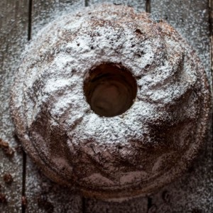
Aujourd’hui rendez vous avec une recette de kouglof, kougelhof, kugelhof, kugelopf, kougelhopf, kugelhopf ou encore kouglouf c’est comme vous voulez!
Le kouglof est une spécialité Alsacienne, Autrichienne et Allemande préparée traditionnellement dans un moule en cuivre ou en terre cuite en forme de cheminée. Très reconnaissable de par sa forme haute et cannelée, sa croûte brune claire, ses amandes et son sucre glace qui le recouvre le Kouglof connait une multitude d’histoires quant à ses origines! Je vais vous raconter ma préférée : certains racontent que le kouglof serait originaire de Bethléem. En sortant de la crèche du petit Jésus, un roi mage aurait oublié son chapeau, un turban d’or serti de diamants en forme d’amande. Au retour de croisade, ce couvre chef se serait retrouvé en Alsace chez un pâtissier qui s’en serait servi comme moule et ainsi serait né le « Kugelhopf » qui signifie « turban » en alsacien.
Il existe aujourd’hui des kouglofs sucrés mais aussi salés, notamment avec des lardons et des noix. Pour ma part, je préfère la version sucrée qui offre une mie tendre et briochée dans laquelle se promènent de nombreux petits raisins imbibés de rhum!
Il y a quelques temps déjà, mon papa m’avait demandé de lui préparer un kouglof. Il faut dire que le challenge n’était pas simple car il voulait retrouver le kouglof d’antan de sa grand-mère! Ma mère et moi même sommes donc parties dans une Battle culinaire!! Pour être honnête je n’avais auparavant jamais fait de recette similaire et surtout je ne voulais pas me planter alors je me suis lancée les yeux fermés et en toute confiance dans la recette de Bernard de la cuisine de Bernard.
Verdict : J’ai gagné la battle 😉 !! La prochaine fois je rajouterai peut être un petit peu plus de beurre!!
A mon tour maintenant de vous livrer cette recette et j’espère qu’elle vous plaira!! Bon début de semaine à tous!
Ingrédients
- Farine - 500g
- Oeufs - 2 de 50g
- Sucre - 100g
- Lait demi-ecrémé - 200ml
- Beurre à temp ambiante - 175g
- Levure de boulanger sèche - 5g
- Sel - 5g
- Raisins - 160g
- Rhum ambré - 1càs
- Sucre glace
Instructions
- Dans le bol de votre robot, verser le sucre, le sel, les œufs (de préférence à température ambiante) ainsi que la moitié du lait et bien mélanger
- Faire tiédir le reste du lait
- Dans un bol verser la levure de boulanger et ajouter le lait tiède
- Laisser de côté
- Ajouter la farine au mélange dans le robot sans pétrir ni mélanger
- Verser la levure diluée
- Pétrir avec le crochet de votre robot
- Laisser le robot faire son travail pendant une bonne quinzaine de minutes (à vitesse 6) Vous devez observer que la pâte devient élastique mais elle colle encore aux parois du robot
- Pendant ce temps, mettre les raisins dans un bol
- Faire tremper les raisins dans de l'eau chaude avec deux bouchons de rhum
- Couper le beurre en morceaux
- Au bout des quinze premières minutes de pétrissage, ajouter le beurre
- Pétrir à nouveau ( environ pendant 20-25 minutes) Vous devez arrêter de pétrir quand la pâte se détache des parois de la cuve
- Égoutter les raisins
- Verser les raisins sur la pâte et mélanger suffisamment pour qu'ils soient correctement incorporés à la pâte
- Beurrer le moule (allez-y franchement).
- Disposer des amandes entières (la prochaines fois j'en mettrais plus) dans les rainures du moule
- Verser la pâte dans le moule
- Laisser lever pendant 2heures
- Préchauffer le four à 180°
- Cuire à 180° pendant 45 minutes
- Démouler puis laisser refroidir
- Saupoudrer de sucre glace
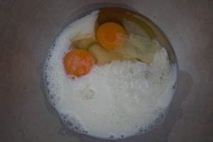
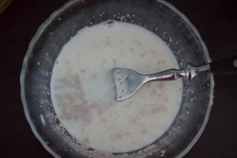
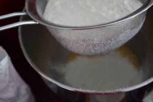
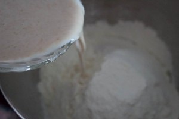
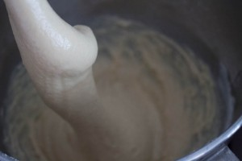
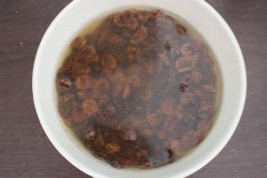
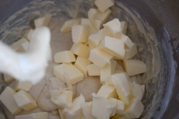
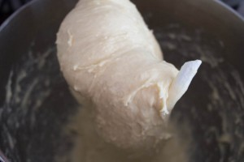
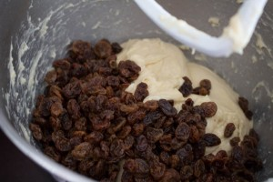
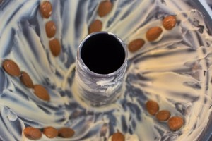
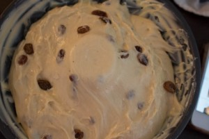
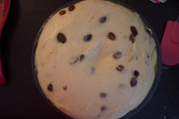
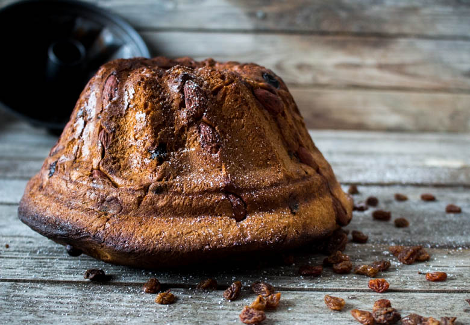
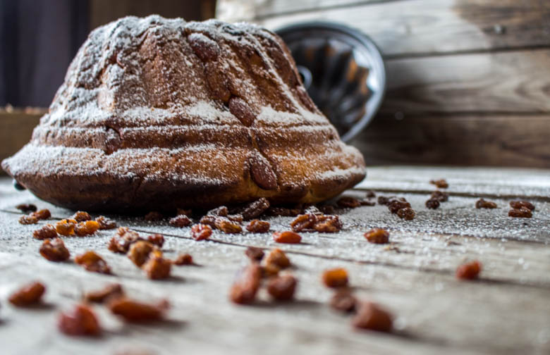
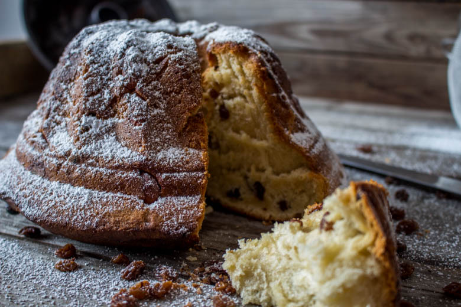
Les tips de la communauté
Grande satisfaction générale avec des retours très positifs sur le résultat. L'auteure valide la recette après une dégustation réussie. Les lecteurs cherchent des conseils pratiques sur les moules et les variantes.
Astuces
- Placer les amandes au bout de chaque rainure pour une répartition équitable à la dégustation
- Utiliser un moule en terre cuite, considéré comme le meilleur selon les Alsaciens
- Le moule doit être authentique et trouvable notamment à Soufflenheim en Alsace
- Pour plus de saveur, privilégier la levure fraîche plutôt que la levure sèche
Variantes suggérées
- Remplacer les raisins par des pépites de chocolat pour plaire à toute la famille
- Ajouter un peu plus de beurre pour renforcer le goût
Ajustements signalés
- Utiliser une levure fraîche de boulanger plutôt que la levure sèche pour conserver plus de goût